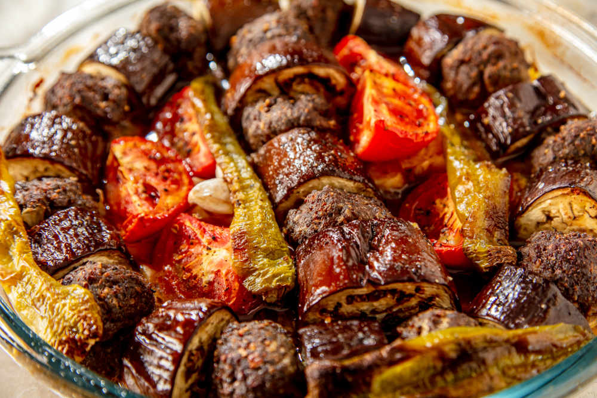

Patlican Kebabi

Description
Patlican kebabi, or eggplant kebab, is a traditional Turkish dish that features grilled or roasted eggplant (aubergine) as the main ingredient. The eggplant is typically charred over an open flame or roasted until soft and tender, giving it a smoky flavor and a creamy texture.
To make patlican kebabi, the grilled or roasted eggplant is peeled and mashed, then mixed with various ingredients such as garlic, lemon juice, olive oil, and spices like cumin and paprika. The mixture is then shaped into patties or balls and grilled or fried until golden brown and crispy on the outside.
Patlican kebabi is often served with yogurt sauce, chopped tomatoes, and parsley. It can be enjoyed as a main dish or as part of a meze spread. The combination of smoky eggplant, aromatic spices, and creamy yogurt sauce makes it a flavorful and satisfying dish.
Ingredients
2 large eggplants (aubergines)
2 cloves of garlic, minced
2 tablespoons olive oil
1 tablespoon lemon juice
1 teaspoon ground cumin
1 teaspoon paprika
Salt and pepper to taste
yogurt sauce, chopped tomatoes, parsley
Steps
Preheat the grill or oven to medium-high heat.
Pierce the eggplants with a fork in several places.
Grill or roast the eggplants until the skin is charred and the flesh is soft, about 20-30 minutes. Turn occasionally for even cooking.
Let the eggplants cool, then peel off the charred skin.
Place the eggplant flesh in a bowl and mash it with a fork or potato masher until smooth.
Add minced garlic, olive oil, lemon juice, ground cumin, paprika, salt, and pepper to the mashed eggplant. Mix well to combine.
Take a portion of the eggplant mixture and shape it into patties or balls.
Heat a grill or skillet over medium heat.
Brush the grill or skillet with olive oil.
Cook the kebabs until golden brown and crispy on both sides, about 3-4 minutes per side.
Serve the kebabs hot with yogurt sauce, chopped tomatoes, and parsley on the side.